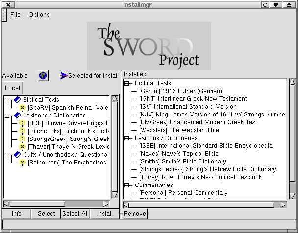

First you must launch installmgr as root. If you are not root, you will not be able to write to the sword directory unless you have given permission to the user that opens sword.
[fks00@localhost fks00]$ su Password: [root@localhost fks00]# installmgr [root@localhost fks00]# /usr/local/bin/installmgr. |
Installmgr will now open. Under the options tab you have the option of Local Path and Manage Remote Sources. Manage remote sources is useful if you have the sword CD (it allows setting the path to the CD). Local Path needs to be set to the location of your unzipped modules. Select any file in the top level directory, and click on the OK.
Now the installmgr local window will be populated with all of the uninstalled modules in your The installed pane will display the modules already installed into sword.
Use the buttons along the bottom of installmgr to work with the modules:
| Info - displays the module info |
| Select - selects a module for installation |
| Select All - selects all of the modules for installation |
| Install - installs all selected modules |
| Remove - removes selected modules from the installed pane and places them in the local pane. |
